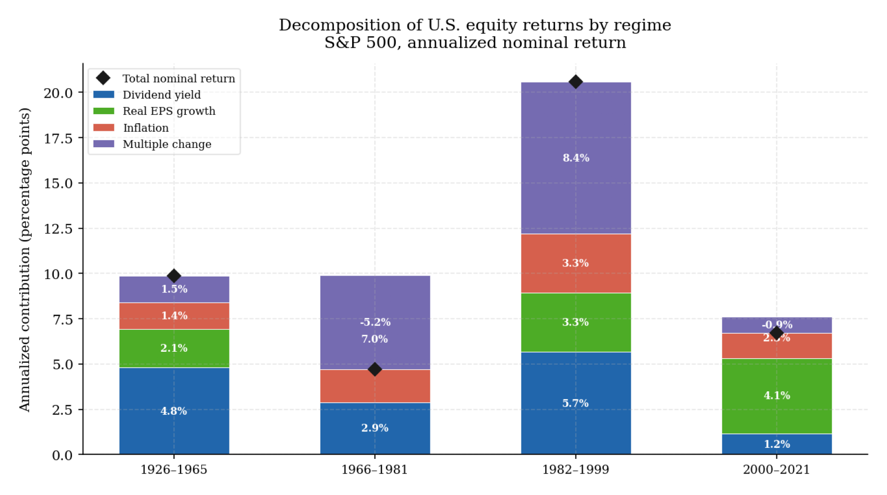
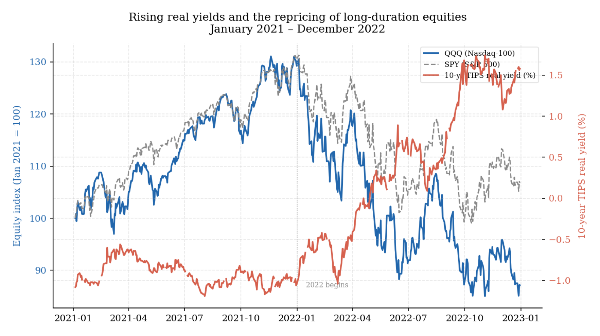
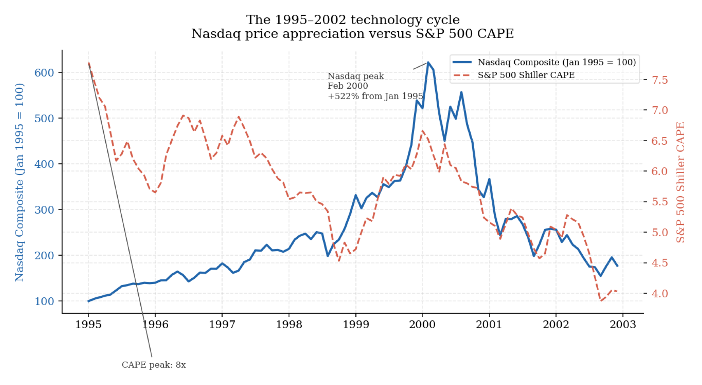
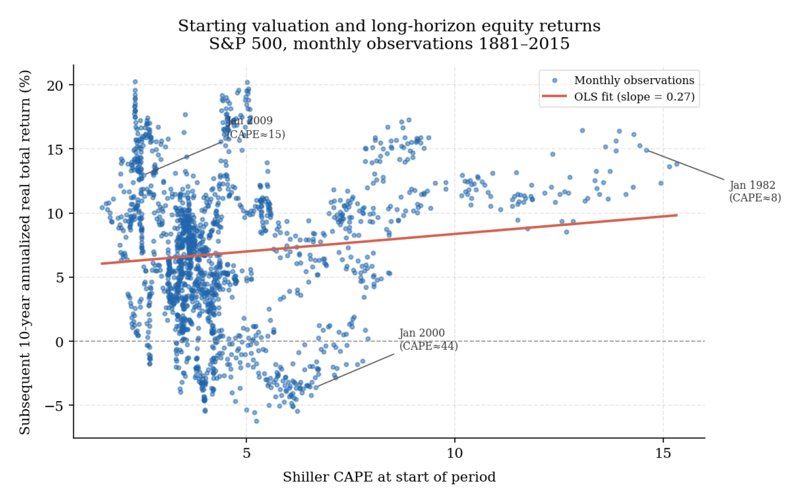
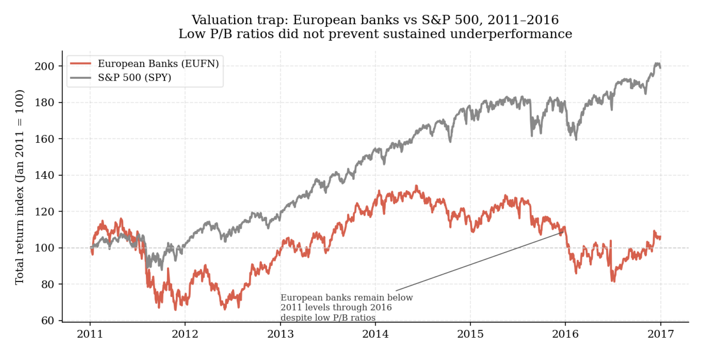

1. Prices, expectations, and market dynamics
Any investment process begins with a question that is easier to state than to answer: what exactly is a market price telling us?
The usual responses are each incomplete. Price is treated as a reflection of value. It is also treated as a reflection of expectations. At other times it is explained by flows, leverage, benchmark pressure, or institutional constraints. In practice it is all of these at once, and the mechanism that dominates changes with market conditions. A more productive starting point is therefore not to ask whether price is “right,” but to ask what is driving it now — and what would have to change for it to move. That framing is closer to how serious asset-pricing research treats the problem: prices incorporate available information through competition, but they are not timeless statements of economic truth (Fama, 1970).
The distinction matters immediately because most weak investment work fails at this first step. Some analysis treats price as a direct reading of value and every gap between the two as evidence of market error. Some leans on narrative without asking what the market has already discounted. Some mistakes a good business for a good investment without addressing what is priced in. Once that confusion enters early, the rest of the process weakens from it.
What a price is, and where returns actually come from
Market price is the level at which buyers and sellers are currently willing to exchange risk. It reflects information, but also required return, risk appetite, financing conditions, liquidity, and balance-sheet capacity. Cochrane’s work on discount-rate variation shows how large and persistent price movements can be driven by changes in required return rather than by any revision to expected cash flows (Cochrane, 2011). A portfolio can lose significant value even when nothing changes in the underlying business, simply because the rate applied to discount those cash flows has shifted.
Value is different from price. It is not directly observed — it is estimated. For an equity, the estimate depends on future cash generation, reinvestment quality, capital intensity, competitive durability, and the discount rate applied to the whole stream. Good valuation work makes this uncertainty visible, operating in ranges and scenario sensitivity rather than in single-point outputs (Damodaran, 2006). A company trading at 8x earnings may look obviously cheap, but the apparent cheapness dissolves if earnings are cyclically elevated, if the refinancing outlook is deteriorating, or if the industry is facing structural pressure. The multiple alone says very little until the assumptions beneath it are made explicit.
A useful way to make this concrete is to decompose historical equity returns into their observable components. Long-run equity return can be approximated as the sum of starting dividend yield, real earnings growth per share, inflation, and the change in the valuation multiple applied by the market (Arnott & Bernstein, 2002). Each component is estimable independently, and the decomposition forces a question that narrative forecasting avoids: which element is actually doing the work?
The chart below applies this decomposition to the S&P 500 across four major regimes. In 1966–1981, total nominal returns were modest despite positive earnings growth because the valuation multiple contracted sharply as inflation rose and real discount rates increased. In 1982–1999, exceptional returns were driven primarily by multiple expansion — the CAPE ratio rose from approximately 8x to 44x — a contribution that was by definition unrepeatable from the starting conditions it produced. In 2000–2021, earnings growth was solid but multiple change was slightly negative. An investor who cannot decompose a historical return into its components does not know which portion is repeatable.
Returns do not come from value in the abstract. They come from the difference between what was priced at entry and what subsequently occurs. An asset can be economically excellent and still perform poorly if the market had already discounted a stronger path. Campbell and Shiller established the empirical version of this logic: valuation ratios contain information about long-horizon subsequent returns, largely because prices eventually adjust, not because they forecast dividend growth reliably (Campbell & Shiller, 1998). What drives return is the gap between expectation and realization, not the absolute quality of the news.
The 2022 episode illustrates how severely the discount rate component can dominate realized returns even when earnings hold up. As U.S. ten-year TIPS real yields rose from approximately negative 1 percent to positive 1.5 percent, long-duration growth equities repriced sharply downward. QQQ fell substantially more than SPY — not because the underlying businesses deteriorated materially, but because the discount rate applied to their future cash flows changed. A purely fundamental analysis focused on earnings quality would have missed this entirely.

When a valid thesis becomes an unsustainable extrapolation
Speculative episodes are often treated as exceptions — departures from the normal condition of rational pricing that require special explanation. The historical record does not support that framing. Episodes of significant market excess have occurred across every major asset class, every institutional era, and in markets populated by professional investors as well as retail ones. What changes across episodes is the surface detail. The underlying structure is recognizable: a plausible initial thesis, rising prices that appear to validate it, broadening participation, weakening selectivity, and eventually a stage where price no longer needs strong fundamentals to keep moving (Brunnermeier & Schnabel, 2016; Kindleberger & Aliber, 2011).
Speculative episodes rarely begin in nonsense. A genuine technological change, a structural decline in interest rates, a new regulatory opening — any of these can create a legitimate basis for early optimism. Barberis, Greenwood, Jin, and Shleifer make this point explicitly: good fundamental news can initiate a bubble rather than prevent one, because it attracts extrapolative capital that then continues well beyond what the original news can justify (Barberis et al., 2018). The problem is what happens when a valid observation extends beyond what the evidence can support.
The 1990s technology cycle illustrates this clearly. The underlying thesis — that internet adoption would reshape commerce, communication, and information — was correct. What happened to valuations was something else. By early 2000 the Nasdaq had risen approximately 400 percent from its 1995 level while the CAPE reached approximately 44x — a level that could only be justified if growth remained frictionless, competition minimal, and capital permanently abundant. The story was real. The pricing had traveled far beyond what the story could support (Shiller, 2015).

The most recent version of this dynamic appeared in 2020–2021 across thematic equities, SPACs, and certain crypto assets. The ARKK quality spread chart below captures the mechanism precisely. During the boom, capital flowed indiscriminately toward growth-associated names regardless of profitability — ARK Innovation ETF outperformed the Nasdaq-100 by a wide margin as quality discrimination collapsed. When the regime reversed in 2022, the spread snapped back sharply. The lower panel makes the full cycle visible.

How crowds build — and why professionals participate
These episodes develop through recognizable stages. Recognition comes first — a real change enters the market and is not yet fully priced. Validation follows as rising prices attract attention and investors who were initially skeptical begin to revise their view, not because fundamentals improved further but because price itself is functioning as evidence (Barberis et al., 1998). The expansion stage brings more capital, new issuance, and a broadening of participation where weaker businesses rise alongside stronger ones because market reward has shifted from underlying economics to association with the theme (Greenwood et al., 2019).
It is tempting to describe speculative excess as a phenomenon of the uninformed. The evidence does not support that. Institutional investors, experienced allocators, and analytically sophisticated analysts participate regularly — but for reasons that are structurally different from simple credulity.
The most consistent reason is relative-performance pressure. Underperforming a rising market inside investment organizations is experienced as active failure — visible to clients and to competitors. When a popular theme continues to work, the cost of staying outside it is not only financial. Careers, mandates, and client relationships are all affected by prolonged underperformance. Hong, Kubik, and Stein find that portfolio decisions are influenced by what peers are holding, in a way that amplifies rather than stabilizes price trends (Hong et al., 2005). A second reason is that crowded trades can remain profitable well past the point where they appear analytically excessive — the mechanism sustaining them does not require fundamental support to remain operative in the short term. A third is that being early and being wrong are difficult to distinguish in real time, and reputational concerns create an incentive to act in line with others even when private signals diverge (Scharfstein & Stein, 1990).
When these episodes eventually reverse, the mechanism of the reversal matters as much as the magnitude. Some deflate slowly through earnings disappointment. Others break abruptly when financing conditions tighten or one large forced seller triggers a liquidity withdrawal. Brunnermeier and Schnabel show that when a boom was financed primarily through leverage, the damage from the bust tends to be substantially larger than when excess was driven by enthusiasm alone (Brunnermeier & Schnabel, 2016). The chart below makes this contrast visible between the 2000–2002 Nasdaq bust and the 2007–2009 financial crisis — comparable peak-to-trough equity declines, but through fundamentally different mechanisms with very different systemic consequences.

The three questions a sound investment view must answer
Most investment work fails in one of two ways. The first is to rely too heavily on valuation. The second is to rely too heavily on narrative.
Valuation is necessary but insufficient as a near-term guide. Cheap assets can remain cheap when the market is focused on a risk that a normalized earnings framework does not capture. The long-horizon evidence supports the idea that starting valuation matters for subsequent returns, but that is very different from saying valuation provides a clean short-run timing signal. This is the central lesson of Campbell and Shiller’s work on the cyclically adjusted price-to-earnings ratio — CAPE, defined as the current price divided by the ten-year average of real earnings: the correlation between CAPE and ten-year subsequent returns is informative at long horizons but nearly useless at short ones (Campbell & Shiller, 1998).

The opposite failure is to lean on narrative without an economic anchor. A compelling story is too easy to construct after the fact and too difficult to invalidate in advance. Without a clear transmission mechanism — a reason why the gap between price and value should close within a relevant horizon — narrative becomes commentary rather than analysis (Cochrane, 2011).
The final chart illustrates how a genuine economic case can fail to produce returns because the market already knew what the analyst knew — and had assigned a depressed multiple for reasons that were not going away. European banks traded at deeply discounted price-to-book ratios throughout 2011–2016. The market was not making an error. It was discounting a genuine set of structural problems — undercapitalization, regulatory pressure, low return on equity — that kept the multiple compressed. An investor who saw only the low multiple without asking why, and whether those conditions were likely to change, underperformed the S&P 500 by more than 100 percentage points over five years.

A sound investment view therefore requires three things working together: an economic case for the asset’s prospects, a credible assessment of what the market has already discounted, and a reason why the gap between the two might matter over the horizon in question. Without all three, the investor has an opinion but not yet a complete thesis.
Understanding why that complete thesis is so difficult to construct consistently — and why it so rarely produces persistent excess return even when it is constructed well — is the subject of section 2.
References
Arnott, R., & Bernstein, P. (2002). What risk premium is “normal”? Financial Analysts Journal, 58(2), 64–85. https://www.researchaffiliates.com/content/dam/ra/publications/pdf/p-2012-jan-expected-return.pdf
Barberis, N., Greenwood, R., Jin, L., & Shleifer, A. (2018). Extrapolation and bubbles. Journal of Financial Economics, 129(2), 203–227. https://www.hks.harvard.edu/sites/default/files/HKSEE/HKSEE%20Files/BF_Extrapolation_Greenwood.pdf
Barberis, N., Shleifer, A., & Vishny, R. (1998). A model of investor sentiment. Journal of Financial Economics, 49(3), 307–343. https://scholar.harvard.edu/files/shleifer/files/model_of_investor_sentiment.pdf
Brunnermeier, M. K., & Schnabel, I. (2016). Bubbles and central banks: Historical perspectives. In Central banks at a crossroads: What can we learn from history? Cambridge University Press. https://www.aeaweb.org/conference/2016/retrieve.php?pdfid=21744
Campbell, J. Y., & Shiller, R. J. (1998). Valuation ratios and the long-run stock market outlook. The Journal of Portfolio Management, 24(2), 11–26. https://www.econ.yale.edu/~shiller/online/jpmalt.pdf
Cochrane, J. H. (2011). Presidential address: Discount rates. The Journal of Finance, 66(4), 1047–1108. https://paulgp.com/speeches/cochrane_2011_afa.pdf
Damodaran, A. (2006). Damodaran on valuation. Wiley. https://pages.stern.nyu.edu/~adamodar/pdfiles/DSV2/Ch2.pdf
Fama, E. F. (1970). Efficient capital markets: A review of theory and empirical work. The Journal of Finance, 25(2), 383–417. https://www.jstor.org/stable/2325486
Greenwood, R., Shleifer, A., & You, Y. (2019). Bubbles for Fama. Journal of Financial Economics, 131(1), 20–43. https://www.nber.org/system/files/working_papers/w23191/w23191.pdf
Hong, H., Kubik, J., & Stein, J. C. (2005). Thy neighbor’s portfolio: Word-of-mouth effects in the holdings and trades of money managers. The Journal of Finance, 60(6), 2801–2824.
Kindleberger, C. P., & Aliber, R. Z. (2011). Manias, panics, and crashes: A history of financial crises (6th ed.). Palgrave Macmillan.
Scharfstein, D. S., & Stein, J. C. (1990). Herd behavior and investment. The American Economic Review, 80(3), 465–479. https://www.jstor.org/stable/2006678
Shiller, R. J. (2015). Irrational exuberance (3rd ed.). Princeton University Press.